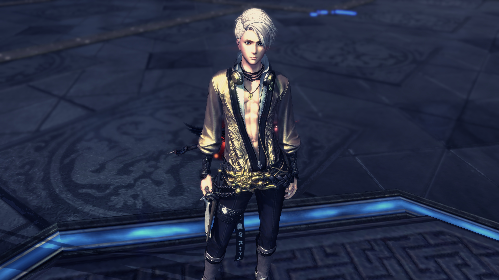

CSE 5912 - Homework 2



I created a double exposure effect using Adobe Photoshop. I overlapped my portrait picture with a nature scene picture (by Samuel Rohl ), and then applied overlay blending mode to the portrait picture.
I used an online picture editor and applied a pencil sketch filter to my portrait picture.
I adjusted the picture size using Adobe Photoshop to make it fit in a billboard. The billboard picture is from Google search.